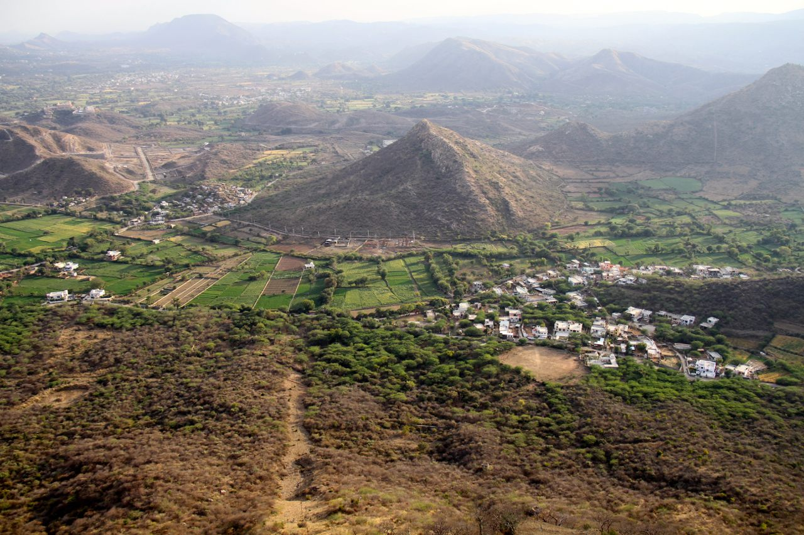
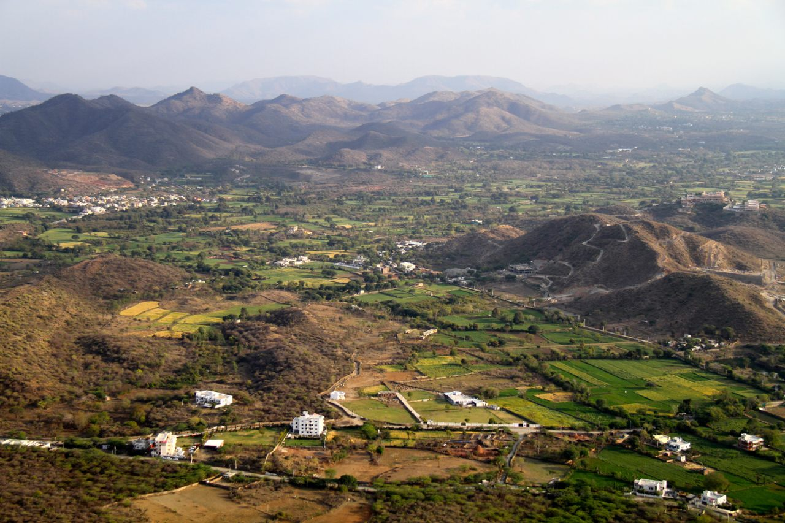

Wheat
A familiar rabi crop across the region. Tau Ji Farm's current planting has not been confirmed.
Regional context · Rabi
Lakshmipura · Soonsadiya · Nainwa, Bundi
A farm in the Bundi countryside, in a landscape shaped by seasonal fields, village life, and the long rhythms of rural Rajasthan.
About the location
Tau Ji Farm (Pandit Vishnu Dutt) is listed in Lakshmipura, near Soonsadiya village in Nainwa Tehsil, Bundi district. The location and farm name come from the public map listing; a fuller account of the family, its history and the land is best told by the people who work it.
Bundi's farming calendar follows two broad seasons: rabi, the cool-season crops, and kharif, which follows the monsoon. This page introduces that local setting; the farm's crops, livestock, facilities and visiting arrangements have not been confirmed and should be updated by the family.
If you are hoping to visit, please contact the family first. Access, opening times, available activities and hospitality have not been confirmed in the public listing.

From the fields
These cards describe common crops and farm life in the wider region, not a confirmed inventory for Tau Ji Farm. Please check with the family before enquiring about specific produce or activities.
A familiar rabi crop across the region. Tau Ji Farm's current planting has not been confirmed.
Regional context · RabiA winter crop seen in Rajasthan's farm landscapes. Confirm with the family whether it is grown here.
Regional context · RabiFruit trees and shade are part of many rural holdings; orchard details for this farm are not listed.
Ask the familyLivestock is common on farms in the area. Whether Tau Ji Farm keeps animals or sells dairy is unconfirmed.
Ask the familyVegetable growing varies with water and season. No crop list is available for this farm yet.
Season dependentPulses and fodder crops are part of the wider agricultural mix; ask the family about the current season.
Varies by seasonGallery
Representative images from farms and rural settings across India — not photographs of Tau Ji Farm. Click any picture to open it full size.
Every photo is a representative image from Wikimedia Commons, not a photo of Tau Ji Farm. Open licences and per-image credit links are provided in the footer. Replace these with the farm's own photographs when available.
Find us
The map listing places Tau Ji Farm near Lakshmipura and Soonsadiya, in Nainwa Tehsil, Bundi district. Confirm the final route with the family before travelling.
The pin is in rural Bundi district. Use the linked map for turn-by-turn directions from your starting point, then confirm the last stretch locally. Road conditions and access details are not available in the public listing.
Do not rely on estimated travel times; check the route and access with the farm.
Contact
Get in touch directly with owner Prince Bharadwaj for visits, harvest inquiries, or route guidance.